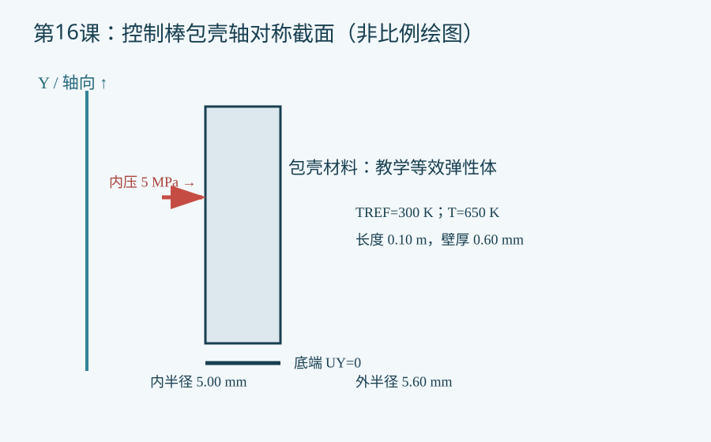

验证状态：已静态检查，尚未运行 MAPDL
已静态检查脚本、单位和注释；本机未运行 MAPDL。第17课为几何风险初筛，不是接触有限元验证。

今日目标
建立一个控制棒包壳的二维轴对称教学模型，比较温升与内压共同作用下的径向位移和等效应力。
物理问题与边界
控制棒包壳被简化为等厚圆筒，X 为半径、Y 为轴向。示例采用 SI 单位；半径 5.00/5.60 mm、长度 0.10 m、内压 5 MPa、参考/运行温度 300/650 K，均为教学假设，不是实堆设计数据。材料使用常数弹性模量与线膨胀系数，无吸收体、辐照、接触、蠕变或温度梯度。底端轴向约束会引入附加应力，必须做约束敏感性分析。
关键命令
ET,1,PLANE182定义结构实体单元；KEYOPT,1,3,1设置轴对称。MP,EX/PRXY/ALPX给出弹性和热膨胀参数。RECTNG与AMESH生成包壳截面和网格。TREF与TUNIF定义热应变参考和均匀温度。SFL,ALL,PRES在所选内表面边线施压；应检查网格边界的法向方向。D,ALL,UY,0模拟刚性底端轴向约束；PLNSOL查看位移与等效应力。
完整脚本
[下载 example.inp](example.inp)。每条可执行命令有中文行尾注释。示例未经本机 MAPDL 求解，验证状态为 static_only。
预期结果
径向位移和环向应力应随内压变化；热膨胀在受约束条件下还会产生轴向应力。不能在未求解时填写峰值数值。
验证清单
检查：①单位与压力正负方向；②单独压力/单独温升/组合载荷对比；③底端约束反力及刚体运动；④至少两档网格的峰值应力收敛；⑤与薄壁圆筒解析估计交叉比对。
常见错误
- 把
TREF与TUNIF都设为运行温度，导致无热应变。 - 内外表面边线选择相反，给错压力；用位移方向验证。
- 将底端固定引入的局部约束应力误当自由圆筒应力；改变端部条件复算。
练习
- 将内压改为 2、5、8 MPa，记录内表面位移和远离底端处的环向应力趋势。
- 将均匀温度改为给定轴向温度场，再补充吸收体—包壳接触与高温蠕变模型；先取得经验证的材料曲线。
命令依据
[ANSYS PLANE182](https://ansyshelp.ansys.com/public/Views/Secured/corp/v242/en/ans_elem/Hlp_E_PLANE182.html) · [ANSYS SFL](https://ansyshelp.ansys.com/public/Views/Secured/corp/v252/en/ans_cmd/Hlp_C_SFL.html) · [ANSYS TREF](https://ansyshelp.ansys.com/public/Views/Secured/corp/v242/en/ans_cmd/Hlp_C_TREF.html)
完整 example.inp（逐行中文注释）
01! 第16课：控制棒包壳轴对称热膨胀与内压，SI单位 m、kg、s、K、Pa 02/CLEAR,NOSTART ! 清空数据库，避免继承其他模型 03/FILNAME,lesson16_rod_clad ! 设置独立结果文件名前缀 04ri=5.00e-3 ! 控制棒包壳内半径，单位 m，教学假设 05ro=5.60e-3 ! 控制棒包壳外半径，单位 m，教学假设 06len=0.10 ! 轴向建模长度，单位 m，教学假设 07press=5.0e6 ! 内压，单位 Pa，教学假设 08tref0=300 ! 无热应变参考温度，单位 K 09top0=650 ! 均匀运行温度，单位 K，非实际堆设计值 10/PREP7 ! 进入前处理器 11ET,1,PLANE182 ! 定义二维结构实体单元 12KEYOPT,1,3,1 ! 选择绕全局Y轴旋转的轴对称分析 13MP,EX,1,1.9e11 ! 材料弹性模量，单位 Pa，教学常数 14MP,PRXY,1,0.30 ! 材料泊松比，无量纲 15MP,ALPX,1,1.6e-5 ! 线膨胀系数，单位 1/K，教学常数 16RECTNG,ri,ro,0,len ! 建立包壳r-z截面，X为半径、Y为轴向 17AATT,1,,1 ! 给唯一面积指定材料1和单元1 18ESIZE,0.10e-3 ! 目标网格尺度，单位 m 19AMESH,ALL ! 网格化包壳截面 20TREF,tref0 ! 设置热应变参考温度 21TUNIF,top0 ! 给全部节点施加均匀温度，形成热膨胀 22LSEL,S,LOC,X,ri ! 仅选择包壳内半径边线 23SFL,ALL,PRES,press ! 给内表面施加正值压力；运行时核对法向 24ALLSEL,ALL ! 恢复全部实体选择 25NSEL,S,LOC,Y,0 ! 选中底部一圈节点 26D,ALL,UY,0 ! 约束轴向位移，教学中假设刚性底端 27ALLSEL,ALL ! 恢复全部节点选择 28FINISH ! 结束前处理 29/SOLU ! 进入结构静力求解器 30ANTYPE,STATIC ! 指定静力分析 31SOLVE ! 求解温升与内压组合载荷 32FINISH ! 结束求解器 33/POST1 ! 进入结果后处理器 34SET,LAST ! 读取最后一个结果集 35PLNSOL,U,X ! 绘制径向位移云图，单位 m 36PLNSOL,S,EQV ! 绘制等效应力云图，单位 Pa 37PRNSOL,S,COMP ! 列出结构应力各分量供核验 38FINISH ! 结束后处理器